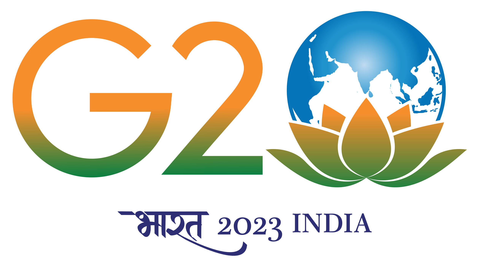

Rajasthan is renowned for its puppetry, particularly the traditional Rajasthani puppetry known as "Kathputli." Colorful wooden puppets are manipulated by skilled puppeteers to depict stories from folklore and mythology.
Rajasthan is a treasure trove of handicrafts, including block printing, tie-and-dye (Bandhani), and hand embroidery. Jaipur, the capital of Rajasthan, is famous for its exquisite hand-block printing on textiles.
The state boasts magnificent forts, palaces, and havelis. The City Palace in Jaipur, Amber Fort in Jaipur, and Mehrangarh Fort in Jodhpur are architectural marvels that showcase the rich history and artistic excellence of Rajasthan.
Rajasthan celebrates various colorful festivals that showcase its cultural diversity. The most famous is the Pushkar Camel Fair, which attracts visitors from around the world. Diwali, Holi, and Gangaur are also celebrated with great enthusiasm.
Rajasthani cuisine is known for its rich and spicy flavors. Dal Baati Churma, Ker Sangri, and Gatte ki Sabzi are some of the popular dishes. Rajasthan is also famous for its sweets like Ghewar and Feeni.